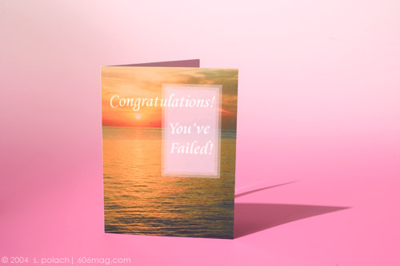

 |
There is an overwhelming human desire to become the best at something. Academics call it mastery, athletes call it championship and business types call it leadership. But for every winner, there are countless losers. It is near-impossible to win all the time. Everyone would still like to be on a “best of” list somewhere, but sometimes losing is the best we can do. The role of failure has an important role in Chicago – there is an industry built off of the idea of the lovable loser, since Wrigleyville is full of celebration regardless of whether the Cubs win or lose. The quintessential loser, television character Al Bundy, stuck his hand down his pants right here in the Windy City. And at least one person voted for Alan Keyes. The icon of literary losers, Don Quixote, will be in residence in Chicago this winter. The Neo-Futurists are presenting the world premier of Windmilled: Tilting at Don Quixote , a prime-time work conceived and directed by Sharon Greene and performed and written by Greene, Jay Torrence and Shawn Huelle. For those not familiar with the 17th century Spanish novel, Miguel de Cervantes, a loveable loser in his own right, wrote a sweeping novel in two parts about a man who sets off on a journey of chivalrous conquest and winds up failing at every attempt. Although the play is not a direct interpretation of Cervantes' novel, it takes a look at several themes the book addresses. In traditional Neo-Futurist style, all three writer/performers weave their distinct personal narratives together, while each commenting on their own successful failures. For Greene, it is the story of her three-and-a-half years working for Planned Parenthood's abortion clinic. Like most people working for social causes, Greene came into the job with hopefulness and a genuine desire to make the world a better place. But when she realized that the fight was, by design, not possible to win, she left. “I sincerely believe that it is my failure to succeed at what I intended to do that gave me the knowledge and experience and skills to do what I do now,” Greene says. She feels accomplished in the work that she did, and recognizes that with an issue so passionately debated by two sides, either side is willing to continue endlessly. Such hot topics are often the venue for the unwinnable fight. So does quitting a fight you cannot win make you a loser? Greene says not necessarily. “Maybe winning all the time, in the long run, isn't the best strategy for learning how to deal with life's choices,” she says. By taking pride in the fight, one can feel successful. That sounds a little after-school-special, but there is value. She sees success as a long string of events – episodic and building – much like the play. We take the good and the bad equally, use it to embark on the next task, and hope that we end up at least a little better off than we began. It helps to have a friend along the way. Maverick had Goose, Xena had Gabrielle, and Quixote had Sancho Panza. Most sidekicks are advocates of their partners, but Sancho Panza was only along for the money. It never comes, but he eventually realizes the value in the adventure itself and in his friendship with Quixote. He also serves as a lens to normalize Quixote's bravado. Sometimes the function of the sidekick is more of a cheerleader, someone to encourage the wannabe hero. Shawn Huelle's narrative is about his road trip to Prudhoe Bay, Alaska, with a friend who wanted to throw his wedding ring into the ocean as a way to get over his failed marriage. Huelle explores this sidekick role, taking Quixote's squire Sancho Panza as inspiration. Jay Torrence, in contrast, performs the play's most abstract pieces, exploring themes directly from the novel that succeed in involving the audience on a personal level. Cervantes saw the novel itself as less than successful. The first part was written in 1605. After mild success, he returned ten years later to write the second half, which, Greene believes, was the author's attempt at learning from his mistakes and at creating a more successful novel from his own perspective. Cervantes writes that, in the end, the ability to overcome ourselves and be better within ourselves is the real success: “Open your eyes, my beloved country, and see that your son Sancho Panza has come back to you, if not very rich, at least well-flogged. Open your arms and receive as well your son Don Quixote, who, though he returns conquered by another, returns the conqueror of himself.” They don't make a Hallmark card for the successful failure, but if they did, people should be sending one to themselves every week. |